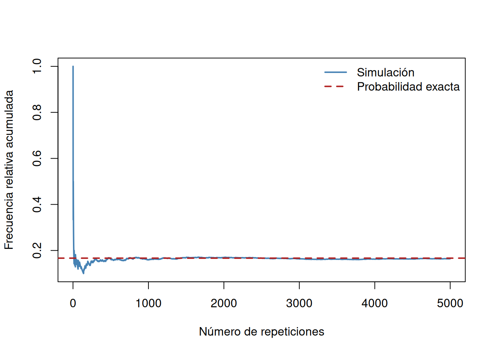

factorial(6)[1] 720choose(12, 3)[1] 220choose(4, 2) * choose(8, 1) / choose(12, 3)[1] 0.2181818Al finalizar este capítulo, el estudiante será capaz de:
En el capítulo anterior describimos resultados y eventos. Ahora necesitamos una regla que cuantifique cuán plausible es cada evento. Una probabilidad es un número entre 0 y 1: valores cercanos a 0 indican eventos poco plausibles y valores cercanos a 1 indican eventos muy plausibles.
Una asignación de probabilidades debe ser coherente. No basta con escribir porcentajes intuitivos; los valores deben respetar la estructura del espacio muestral y las relaciones entre eventos.
Si un espacio muestral finito \(S\) contiene \(N\) resultados y el modelo justifica que todos son igualmente probables, entonces para cualquier evento \(A\),
\[ P(A)=\frac{|A|}{|S|}. \]
La igualdad de probabilidades es un supuesto del modelo, no una consecuencia automática de que el espacio sea finito. Un dado cargado sigue teniendo seis resultados posibles, pero éstos no son equiprobables.
Si un experimento se repite \(n\) veces en condiciones semejantes y \(A\) ocurre \(n_A\) veces, la frecuencia relativa es
\[ \widehat P_n(A)=\frac{n_A}{n}. \]
Esta cantidad sirve para estimar una probabilidad desconocida. Cambia de una muestra a otra y no debe confundirse con la probabilidad teórica del modelo.
En confiabilidad, riesgo o diagnóstico puede ser necesario combinar datos históricos, conocimiento físico y juicio experto. La asignación es válida si declara sus supuestos, produce valores coherentes y puede contrastarse con nueva evidencia.
Una función \(P\) que asigna probabilidades a los eventos debe cumplir:
\[ P(A\cup B)=P(A)+P(B). \]
Para una familia finita de eventos mutuamente excluyentes, la probabilidad de la unión es la suma de sus probabilidades.
De los axiomas se obtienen reglas de uso cotidiano:
\[ P(\varnothing)=0, \]
\[ P(A^c)=1-P(A), \]
\[ P(A\setminus B)=P(A)-P(A\cap B), \]
\[ P(A\cup B)=P(A)+P(B)-P(A\cap B). \]
La última expresión resta la intersección porque los resultados comunes se contarían dos veces al sumar \(P(A)\) y \(P(B)\).
En un lote, \(P(A)=0.08\) para el evento “la pieza tiene una falla dimensional” y \(P(B)=0.05\) para “la pieza tiene una falla superficial”. Si \(P(A\cap B)=0.02\), entonces
\[ P(A\cup B)=0.08+0.05-0.02=0.11. \]
Por tanto, la probabilidad de que una pieza presente al menos una de las dos fallas es \(0.11\), mientras que la probabilidad de que no presente ninguna es
\[ 1-0.11=0.89. \]
Sea
\[ S=\{s_1,s_2,\ldots,s_N\}. \]
Una forma general de definir un modelo finito consiste en asignar a cada punto una masa \(p_i\) tal que
\[ p_i\geq 0 \qquad\text{y}\qquad \sum_{i=1}^{N}p_i=1. \]
Entonces, para cualquier evento \(A\),
\[ P(A)=\sum_{s_i\in A}p_i. \]
Supongamos que las probabilidades de las caras de un dado son
| Resultado | 1 | 2 | 3 | 4 | 5 | 6 |
|---|---|---|---|---|---|---|
| Probabilidad | 0.10 | 0.15 | 0.15 | 0.20 | 0.20 | 0.20 |
Los valores son no negativos y suman 1. Para \(A=\) “obtener un número par”,
\[ P(A)=0.15+0.20+0.20=0.55. \]
No sería correcto usar \(3/6\) porque las caras no son equiprobables.
Contar permite determinar \(|S|\) y \(|A|\) sin enumerar uno por uno todos los resultados.
Si una tarea puede realizarse mediante una de varias alternativas mutuamente excluyentes y la alternativa \(i\) admite \(n_i\) formas, el total es
\[ n_1+n_2+\cdots+n_k. \]
Por ejemplo, si un laboratorio puede seleccionar uno de 4 sensores ópticos o uno de 3 sensores térmicos, existen \(4+3=7\) selecciones posibles.
Si un procedimiento tiene \(k\) etapas y la etapa \(i\) admite \(n_i\) opciones para cada elección previa, el total de resultados es
\[ n_1n_2\cdots n_k. \]
Una clave formada por dos letras seguidas de tres dígitos, permitiendo repeticiones, tiene
\[ 26^2\,10^3=676\,000 \]
configuraciones.
Para un entero \(n\geq1\),
\[ n!=n(n-1)\cdots2\cdot1, \]
y por convenio \(0!=1\).
El número de maneras de ordenar \(n\) objetos distintos es
\[ P_n=n!. \]
Si se eligen \(r\) objetos distintos de un conjunto de \(n\) y el orden importa,
\[ P(n,r)=\frac{n!}{(n-r)!}. \]
Si se eligen \(r\) objetos y el orden no importa,
\[ \binom{n}{r}=\frac{n!}{r!(n-r)!}. \]
La pregunta decisiva es: ¿cambiar el orden produce un resultado diferente? Elegir presidenta, secretaria y tesorera es un arreglo; formar un comité de tres personas es una combinación.
| Situación | ¿Importa el orden? | ¿Se permite repetición? | Conteo |
|---|---|---|---|
| ordenar \(n\) objetos distintos | sí | no | \(n!\) |
| elegir y ordenar \(r\) de \(n\) | sí | no | \(n!/(n-r)!\) |
| elegir \(r\) de \(n\) | no | no | \(\binom{n}{r}\) |
| formar una secuencia de longitud \(r\) con \(n\) símbolos | sí | sí | \(n^r\) |
Una caja contiene 12 componentes, de los cuales 4 son defectuosos. Se seleccionan 3 sin reemplazo y sin considerar el orden. Si todos los grupos de tres son igualmente probables, el número total de muestras es
\[ \binom{12}{3}=220. \]
Para obtener exactamente dos defectuosos se eligen 2 de los 4 defectuosos y 1 de los 8 conformes:
\[ \binom{4}{2}\binom{8}{1}=48. \]
Por tanto,
\[ P(\text{exactamente 2 defectuosos}) =\frac{48}{220} \approx0.2182. \]
El producto del numerador refleja dos decisiones: seleccionar los defectuosos y seleccionar el componente conforme.
R incluye funciones para factoriales y combinaciones:
factorial(6)[1] 720choose(12, 3)[1] 220choose(4, 2) * choose(8, 1) / choose(12, 3)[1] 0.2181818Para arreglos sin repetición podemos definir:
arreglos <- function(n, r) {
factorial(n) / factorial(n - r)
}
arreglos(10, 4)[1] 5040En espacios pequeños conviene generar todos los resultados para comprobar el razonamiento. Para dos dados:
dados <- expand.grid(dado_1 = 1:6, dado_2 = 1:6)
evento <- subset(dados, dado_1 + dado_2 >= 10)
nrow(evento)[1] 6nrow(dados)[1] 36nrow(evento) / nrow(dados)[1] 0.1666667evento dado_1 dado_2
24 6 4
29 5 5
30 6 5
34 4 6
35 5 6
36 6 6Hay 6 resultados favorables de 36, de modo que
\[ P(\text{suma}\geq10)=\frac{6}{36}=\frac{1}{6}. \]
Una simulación imita el experimento mediante números pseudoaleatorios. No sustituye un cálculo exacto disponible, pero permite comprobarlo, estudiar modelos grandes y observar la variabilidad muestral.
set.seed(2026)
n <- 5000
d1 <- sample(1:6, n, replace = TRUE)
d2 <- sample(1:6, n, replace = TRUE)
ocurre <- d1 + d2 >= 10
frecuencia <- cumsum(ocurre) / seq_len(n)
plot(frecuencia, type = "l", col = "steelblue", lwd = 2,
xlab = "Número de repeticiones",
ylab = "Frecuencia relativa acumulada")
abline(h = 1/6, col = "firebrick", lty = 2, lwd = 2)
legend("topright", c("Simulación", "Probabilidad exacta"),
col = c("steelblue", "firebrick"), lty = c(1, 2),
lwd = 2, bty = "n")
La trayectoria fluctúa más al inicio. A medida que crece el número de repeticiones, suele estabilizarse cerca de \(1/6\). Esta regularidad empírica motiva la ley de los grandes números, que se estudiará posteriormente.
set.seed(314)
B <- 20000
defectuosos <- replicate(B, {
muestra <- sample(c(rep(1, 4), rep(0, 8)), 3,
replace = FALSE)
sum(muestra)
})
mean(defectuosos == 2)[1] 0.22385choose(4, 2) * choose(8, 1) / choose(12, 3)[1] 0.2181818La primera salida es una estimación y cambia ligeramente al modificar la semilla; la segunda es la probabilidad exacta.
Abra GeoGebra Classic y realice la siguiente exploración:
n entre 1 y 20 y r entre 0 y 20.Deberá observar la simetría
\[ \binom{n}{r}=\binom{n}{n-r}. \]
Interprétela así: seleccionar los \(r\) elementos que entran equivale a seleccionar los \(n-r\) que quedan fuera.
Calcule combinaciones para valores consecutivos de \(n\) y organícelas por filas. Compruebe visualmente la identidad
\[ \binom{n}{r}=\binom{n-1}{r-1}+\binom{n-1}{r}. \]
Antes de aplicar una fórmula, siga esta secuencia:
El desarrollo de los axiomas, las reglas elementales y los métodos de conteo sigue el tratamiento introductorio de Walpole et al. (2012) y se complementa con la perspectiva aplicada de Montgomery y Runger (2018).